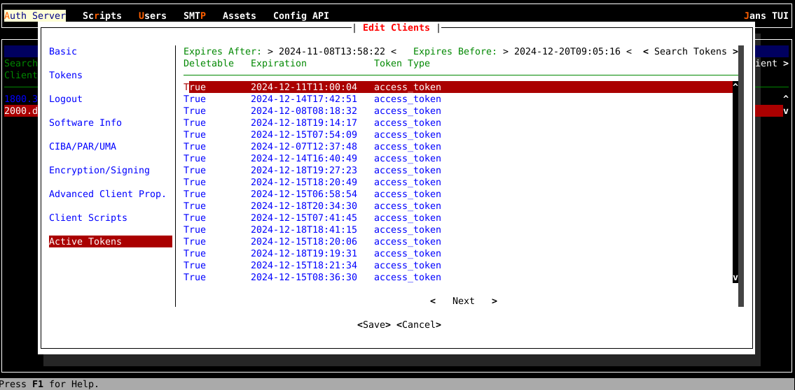

OpenID Connect Configuration#
The Janssen Server provides multiple configuration tools to perform these tasks.
Use the command line to perform actions from the terminal. Learn how to use Jans CLI here or jump straight to the Using Command Line
Use a fully functional text-based user interface from the terminal. Learn how to use Jans Text-based UI (TUI) here or jump straight to the Using Text-based UI
Use REST API for programmatic access or invoke via tools like CURL or Postman. Learn how to use Janssen Server Config API here or Jump straight to the Using Configuration REST API
Using Command Line#
In the Janssen Server, you can deploy and manage the OpenID Connect Client using the
command Line. To get the details of Janssen command line operations relevant to
OpenID Connect Client, you can check the operations under OauthOpenidConnectClients
task using the command below:
Let's get the information about OpenID Connect Client Configuration:
jans cli --info OauthOpenidConnectClients
| Sample Output | |
|---|---|
1 2 3 4 5 6 7 8 9 10 11 12 13 14 15 16 17 18 19 20 21 22 23 24 25 26 27 28 29 30 | |
Get List of OpenID Connect Clients#
To get the list of OpenID Connect clients, run the following command:
jans cli --operation-id get-oauth-openid-clients
| Sample Output | |
|---|---|
1 2 3 4 5 6 7 8 9 10 11 12 13 14 15 16 17 18 19 20 21 22 23 24 25 26 27 28 29 30 31 32 33 34 35 36 37 38 39 40 41 42 43 44 45 46 47 48 49 50 51 52 53 54 55 56 57 58 59 60 61 62 63 64 65 66 67 68 69 70 71 72 73 74 75 76 77 78 79 80 81 82 83 84 85 86 87 88 89 90 91 92 93 94 95 96 97 98 99 100 101 102 103 104 105 106 107 | |
To search using parameters, use the command below:
jans cli --operation-id get-oauth-openid-clients \
--endpoint-args limit:2
Creating a New OpenID Connect Clients#
To add an OpenID Connect client, we can use post-oauth-openid-client operation id.
As shown in the output for --info command, the
post-oauth-openid-client operation requires data to be sent
according to Client schema.
To see the schema, use the command below:
jans cli --schema Client
The Janssen Server also provides an example of data that adheres to the above schema. To fetch the example, use the command below.
jans cli --schema-sample Client
Using the schema and the example above, we have added OpenID Connect
client data to the file /tmp/openid-connect.json. An OpenID Connect client may have many properties, but we are going to fill only the required properties as shown below:
{
"redirectUris": [
"https://www.google.com/"
]
}
jans cli --operation-id post-oauth-openid-client \
--data /tmp/openid-connect.json
Update OpenId Connect client#
To update the configuration follow the steps below.
- Get the existing OpenID Connect Client and store
it into a file for editing. The following command will retrieve the existing
OpenID Connect Client in the schema file.
Command
jans cli -no-color \ --operation-id get-oauth-openid-clients-by-inum \ --url-suffix inum:1800.ca57f8f8-e163-4cdc-96f2-e2760e627bfe > /tmp/update-client.json - Edit and update the desired configuration values in the file while keeping
other properties and values unchanged. Updates must adhere to the
Clientschema as mentioned here. - We have changed in
parLifetimeonly the600to700. Use the updated file to send the update to the Janssen Server using the command belowCommandjans cli --operation-id put-oauth-openid-client \ --data /tmp/update-client.json
Upon successful execution of the update, the Janssen Server responds with updated configuration
Patch OpenID Connect Client by inum#
Using patch-oauth-openid-client-by-inum, we can modify OpenID Connect Clients
partially for its properties.
To use this operation, specify the inum of the OpenID Connect Client that needs to be updated
using the --url-suffix and the property and the new value using the
JSON Patch. Refer here
to know more about schema.
In this example: we will change the value of the property applicationType
from web to native.
| Input | |
|---|---|
1 2 3 4 5 6 7 | |
Now let's do the operation with the command line.
jans cli \
--operation-id patch-oauth-openid-client-by-inum \
--url-suffix inum:1800.ca57f8f8-e163-4cdc-96f2-e2760e627bfe --data /tmp/schema.json
Get OpenID Connect Client by Inum#
With get-oauth-openid-clients-by-inum operation-id, we can get any specific
OpenID Connect Client matched with Inum. If we know the inum, we can use the
below command:
jans cli \
--operation-id get-oauth-openid-clients-by-inum \
--url-suffix inum:1800.ca57f8f8-e163-4cdc-96f2-e2760e627bfe
inum:1800.ca57f8f8-e163-4cdc-96f2-e2760e627bfe.
Delete OpenID Connect client#
Delete the OpenID Connect client using its inum. The command line is:
jans cli \
--operation-id delete-oauth-openid-client-by-inum \
--url-suffix inum:a89b5c29-2a91-48b5-bf27-1bf786954a06
inum.
Using Text Based UI#
Start TUI using the command below:
jans tui
Client Screen#
Navigate to Auth Server -> Clients to open the client screen as shown
in the image below.

- This screen shows the OpenID Connect Clients list.
- To get the list of currently added clients, bring the control to
Searchbox (using the tab key), and press theEnterkey. Type the search string to search for the client with the matching client name.
Add-Update Client screen#
- Use the
Add Clientbutton to create a new client. -
After adding the valid data using the
Savebutton, add a new OpenID Connect client. -
Update the OpenID Connect client as well.
- To update the client, bring the control to the Specific
Clientrow and press theEnterkey, then it will show the edit client screen.

- If you are editing a client, you will have Active Tokens where you can search and delete tokens related to the edited client as shown image below.

To view client details in json format, press key v on keyboard, to delete press delete (or d) key.
Delete Screen#
- To delete the client, bring the control to the Specific
Clientrow and press theDeletekey. Then it will show the Delete confirmation box.

Using Configuration REST API#
Janssen Server Configuration REST API exposes relevant endpoints for managing and configuring the OpenID Connect Client. Endpoint details are published in the Swagger document.